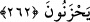

Kendilerinin mutluluğuyla başkalarının sıkıntısına.
Ameller niyetlere göredir. Bir hadis-i şerifte Peygamberimiz (a.s.): “Mü’minin niyeti
amelinden daha hayırlıdır” buyurmaktadır. Bu hadisin vürûd sebebi şöyledir: Hz.
Osman (r.a.), Hz. Peygamber (a.s.)’ın, su kuyusu açmanın ne kadar sevaplı bir iş olduğu
hakkındaki beyânâtını duyunca hemen bir kuyu açmağa niyet etti. Fakat müşriklerden
biri daha acele davranarak Osman (r.a.)’dan önce kuyuyu açtı. Bunun üzerine Hz.
Peygamber Efendimiz (s.a.): “Mü’minin niyeti amelinden daha hayırlıdır.”[228]
buyurdu. Yani kâfirin amelinden daha hayırlıdır.
Diğer bir mânâya göre, mü’minin niyeti, onun niyetsiz yaptığı amelinden daha
hayırlıdır. Çünkü niyyet ederek yaptığı amel niyetsiz olarak yaptığından daha üstündür.
Namaz gibi işlenirken niyetin gerektiği ibâdetlerde niyyet olmazsa amelin bir faydası
olmaz. Bazı amellerde ise niyete ihtiyaç yoktur. Kur’ân okumak, zikir yapmak gibi.
İnfakın, birtakım mertebeleri vardır: Avamın infakı, bunlar mallarının bir kısmını
infak ederler. Bunun karşılığı cennettir. Havâssın infakı ise, nefsi tezkiye ve kalbi
tasfiye sûretiyle hallerini düzeltmeleridir. Bunun karşılığı ise kıyâmet günü vechullaha
bakmaktır. O halde mü’minin malını Allah yolunda dağıtmak sûretiyle mal sevgisinden
nefsini tezkiye, kalbini tasfiye etmesi gerekir. Ancak o takdîrde, yukarıda bahsedilen
şerefe ulaşabilirler. Bunun yanında kıyâmet günü Allah indinde kaybedenlerden
olmamak için cimrilikten de uzak durmalıdır.
262. Mallarını Allah yolunda harcayıp da arkasından başa kakmayan, fakirlerin
gönlünü kırmayan kimseler var ya, onların Allah katında has mükâfatları vardır.
Onlar için korku yoktur, üzüntü de çekmeyeceklerdir.
Bu kimseler mallarını verilmesi gereken yerlere verirler. Yaptıkları iyiliklere minnet
ve eza katmazlar.
“Men”, birinin iyilik yaptığı kimseye “sana şöyle şöyle iyilik yaptım” demek
suretiyle o kimseye, kendisine karşı verecekli durumunda olduğunu hissettirmesidir. İşte
Allah için harcama yapanlar “ben sana şöyle şöyle iyilik yaptım; şu şu hayırların sana
kavuşmasına sebep oldum” diyerek verdiklerini başa kakmazlar.
“Ezâ” ise, kişinin iyilik ettiği kimseye karşı büyüklenmesidir. Allah için infâkta
bulunan kimse, iyilik ettiği kimseye: “Ben sana iyilik ettim, sen bana teşekkür etmedin”,
“Kaç kez gelip bana eziyet veriyorsun”, “Kaç defadır isteyip duruyorsun, utanmıyor